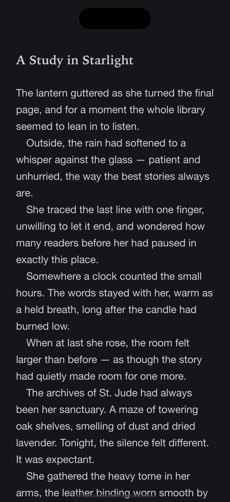
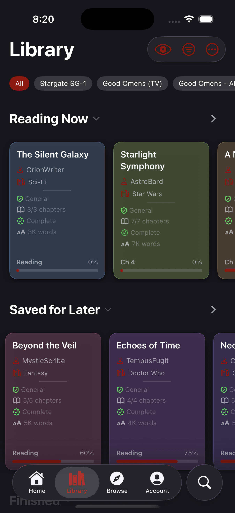
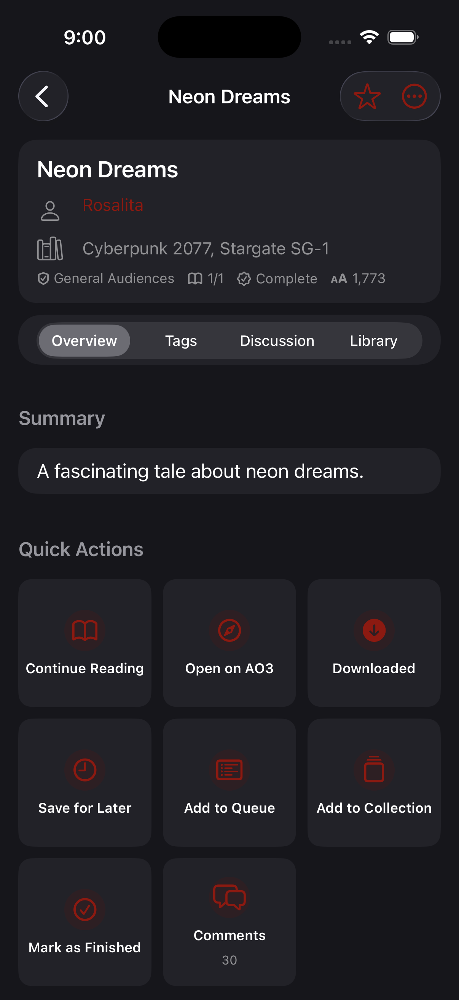
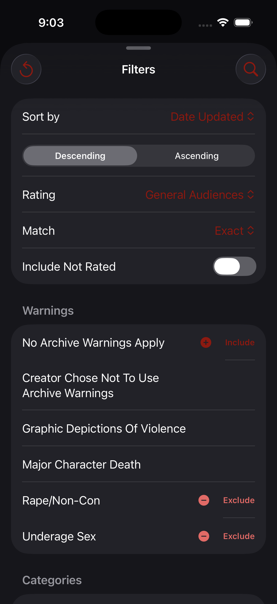

Kudos
A free, open-source, ad-free native reader for Archive of Our Own.

No two shelves look alike.
AO3 has no cover art, so every card gets a deterministic color from its title.

Read offline with native EPUBs.
Native rendering engine supporting light, sepia, and dark themes with custom typography.
Organize your library locally.
Keep track of what you intend to read with Reading Queues, Collections, and saved works.

Native search and browse.
Faceted search and browse-by-fandom capabilities with full metadata density.

Platforms
iPhone, iPad, Mac
Build from source in Xcode. There is no App Store or TestFlight listing.
Android
Download the pre-release APK from GitHub Releases.
Privacy & Open Source
Free and AGPL-3.0 forever.
No ads, no analytics, no tracking, no telemetry.
Kudos is an independent, unofficial personal project. It is not affiliated with, endorsed by, or connected to the Organization for Transformative Works (OTW) or Archive of Our Own (AO3). It does not use an official AO3 API; it scrapes public HTML. Session credentials stay on-device in the Keychain.
Join in
Try it
Open AO3_App_OpenSource.xcodeproj in Xcode and build the AO3_App_OpenSource scheme:
xcodebuild -project AO3_App_OpenSource.xcodeproj \
-scheme AO3_App_OpenSource \
-destination 'platform=iOS Simulator,name=iPhone 17' \
CODE_SIGNING_ALLOWED=NO build